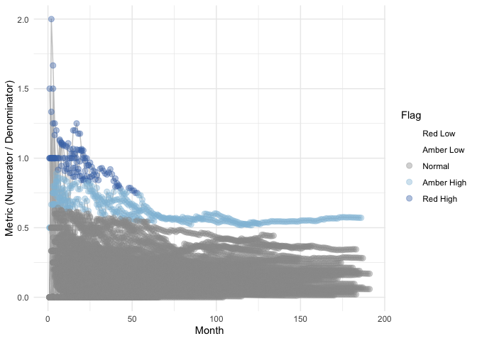

Overview
The gsm.timez package provides functions for generating cumulative event timelines and calculating z-scores for clinical trial monitoring. It is part of the IMPALA Consortium’s GSM (Good Statistical Monitoring) framework.
The package includes five main functions:
-
Timeline(): Generates a site-level timeline of cumulative numerator events (e.g., adverse events) over sequential months. -
TimeZScore(): Calculates z-scores for each group (e.g., site) based on the rate of events, enabling identification of sites with unusual event patterns. -
Flag(): Adds flag columns to analyzed data identifying possible statistical outliers based on threshold comparisons. This is an alias forgsm.core::Flag(). -
Visualize(): Creates a line plot showing site metrics over time with dots colored by flag value to highlight outliers. -
VisualizeBoxplot(): Creates boxplots showing the distribution of Metric values for each month, with individual points colored by flag value.
Installation
You can install the development version of gsm.timez from GitHub with:
# install.packages("pak")
pak::pak("IMPALA-Consortium/gsm.timez")Quick Start
library(gsm.timez)
library(dplyr)
# Prepare data
dfSubjects <- clindata::rawplus_dm
dfNumerator <- clindata::rawplus_ae
dfDenominator <- clindata::rawplus_visdt %>%
dplyr::mutate(visit_dt = as.Date(visit_dt, "%Y-%m-%d"))
# Full pipeline: Timeline -> Z-Score -> Flag -> Visualize
gsm.timez::Timeline(
dfSubjects = dfSubjects,
dfNumerator = dfNumerator,
dfDenominator = dfDenominator,
strGroupCol = "siteid",
strSubjectCol = "subjid",
strNumeratorDateCol = "aest_dt",
strDenominatorDateCol = "visit_dt"
) %>%
gsm.timez::TimeZScore() %>%
gsm.timez::Flag() %>%
gsm.timez::Visualize()
Learn More
For detailed documentation on each function, including parameters, output columns, and advanced usage examples, see the Detailed Usage vignette.
Quality Control
Since {gsm} is designed for use in a GCP framework, we have conducted extensive quality control as part of our development process. In particular, we do the following during early development:
- Unit Tests - Unit tests are written for all core functions, 100% coverage required.
- Workflow Tests - Additional unit tests confirm that core workflows behave as expected.
- Function Documentation - Detailed documentation for each exported function with examples is maintained with Roxygen.
- Package Checks - Standard package checks are run using GitHub Actions and must be passing before PRs are merged.
- Continuous Integration - Continuous integration is provided via GitHub Actions.
- Code Formatting - Code is formatted with {styler} before each release.
- Contributor Guidelines - Detailed contributor guidelines including step-by-step processes for code development and releases are provided as a vignette.
- Code Demonstration - Cookbook Vignette provides demos and explanations for code usage.